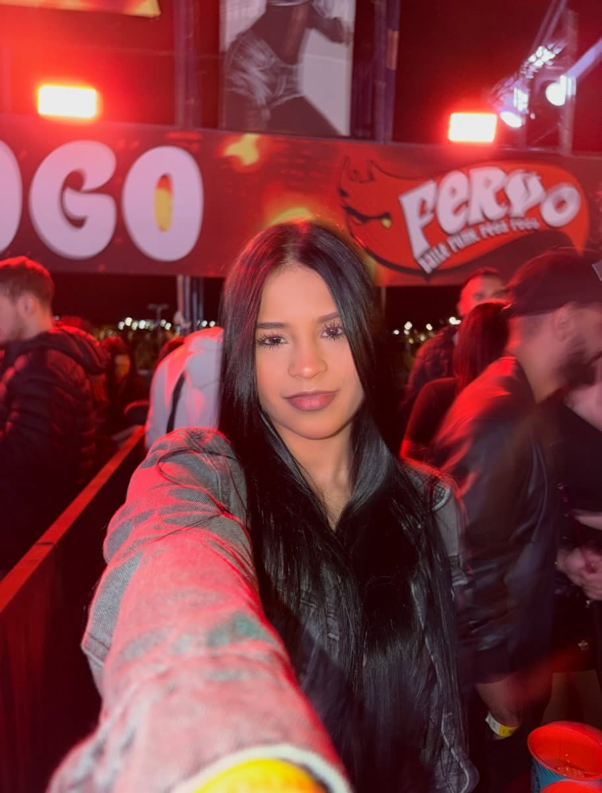

PALAVRAS QUE ENCONTRARAM UM LUGAR
Entre uma conversa
e outra,
você ficou.
Rayssa, esse é um presentinho do seu garoto de programa. Fiz o site e já aceitei o contrato de manutenção vitalícia KKKKK. Vou atualizar sempre que tiver um recado pra você ou uma lembrança nossa que eu quiser guardar aqui. Com carinho, Ítalo.
Abra o meu diárioEscrito com calma. Sentido de verdade.
ficar guardadas.

Tem um pouco de você
em tudo o que eu escrevo.
DESDE QUE VOCÊ GANHOU ESSE LUGAR EM MIM
Tempo apaixonado.
O tempo passa.
E eu continuo escolhendo escrever sobre você.
Desde aquele dia, cada segundo tem um pouco de você.
Desde HORÁRIO DE BRASÍLIA
Uma história que ganha um segundo novo a cada instante.
O contador continua, mesmo quando você fecha esta página.
e eu continuo por aqui.AS IMAGENS TAMBÉM GUARDAM SENTIMENTOS
Um pouquinho de nós.
UM DIA DE CADA VEZ
Os dias, em palavras.
Um pedacinho do meu dia.
Um pensamento sobre você.
Tem um recado para você
01 / AS PÁGINAS
O que eu guardo de nós.
Tem dia que vira lembrança.
Tem lembrança que vira texto.
As datas de vocês já estão guardadas. Complete os textos sugeridos e ajuste o nível de saudade no editor do diário.
Nenhuma página por aqui ainda.
Tente outra palavra ou outro assunto.
02 / O QUE NÃO CABE EM PALAVRAS
Se desse para medir
a minha saudade…
Esse seria o jeito mais perto de te mostrar.
Mesmo sabendo que tem coisa que passa da escala.
03 / DESDE A PRIMEIRA CONVERSA
Todo começo tem um detalhe.
Uma história feita de pequenos momentos.
E que venham as próximas páginas.
04 / NO NOSSO MURAL
Antes que eu me esqueça.
AS LEMBRANÇAS QUE AINDA VÊM
Fotos nossas.
Um lugar reservado para a gente.
Ainda vamos caber em muitas fotos.
Por enquanto, este espaço espera por nós dois.
As próximas lembranças também vão ter imagem.

Algumas histórias a gente vive.
Outras, a gente também escreve.